Experimental Publication
Fox Trapping 2025 Edition

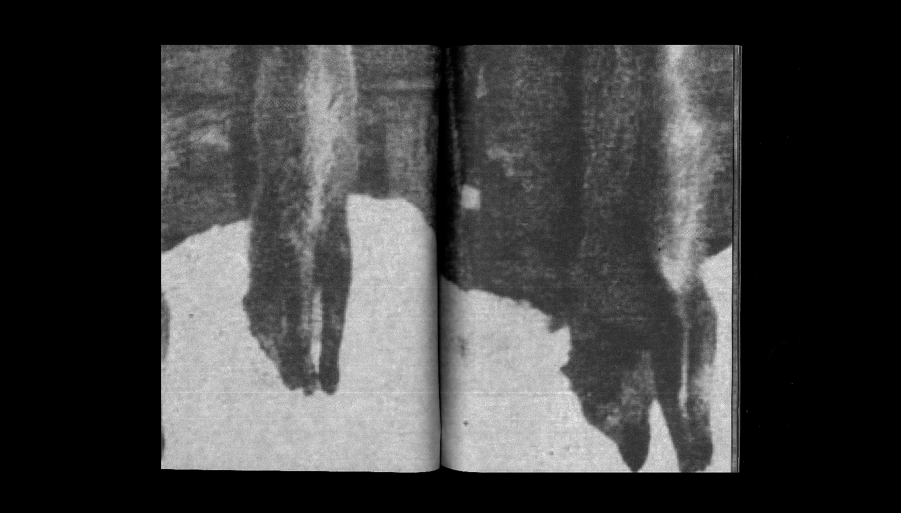
Driven by a curiosity about everyday human activities, I dug through the 'How-to' section of the Project Gutenberg archive and found a fox-trapping manual written by an American hunter in 1906. I was fascinated by its raw, grainy images and how they were both so cruel and factual at the same time. Through experiments with binding, typography, and materiality, I reframed this seemingly no longer relevant manual into a contemporary book object to critically reflect on the act of trapping and the complex relationship between humans and other animals.
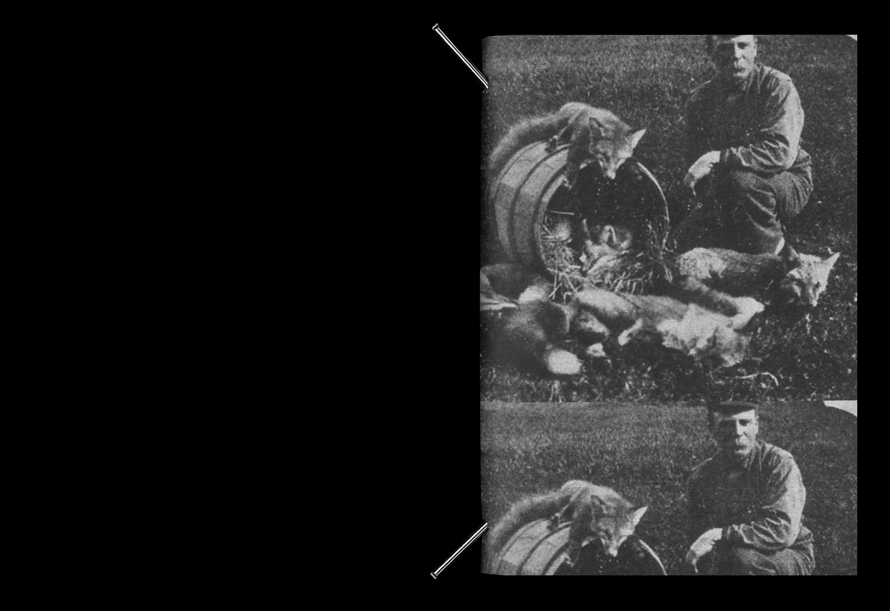
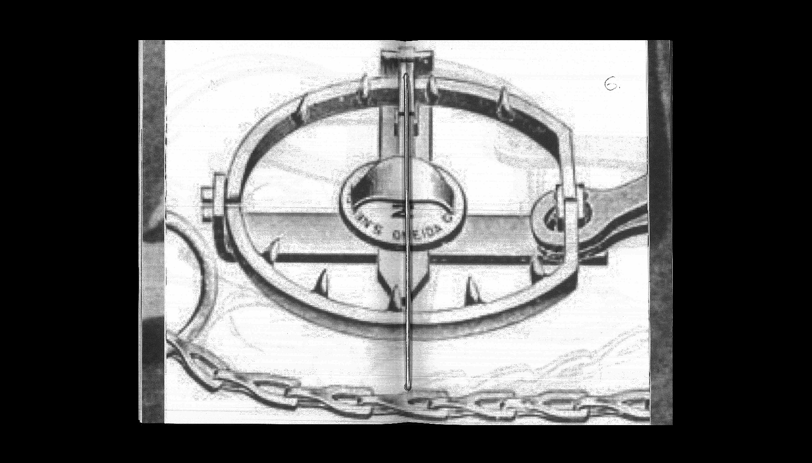
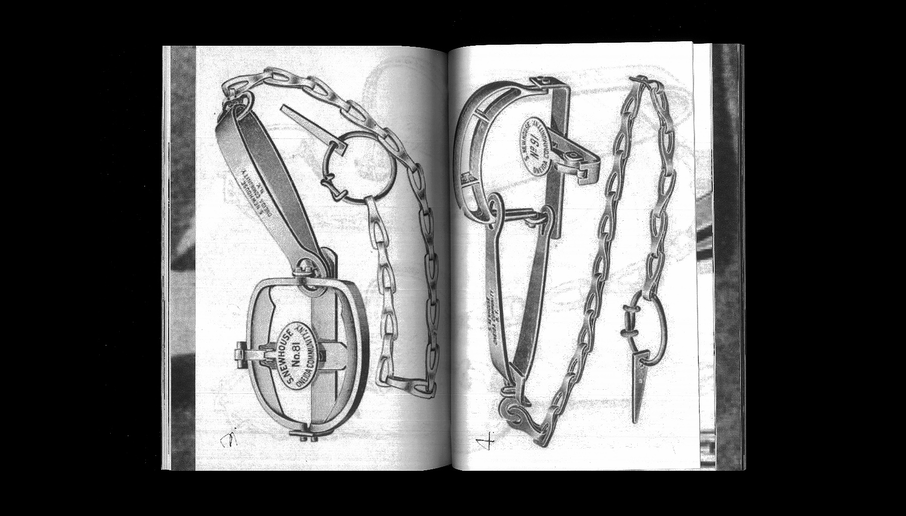
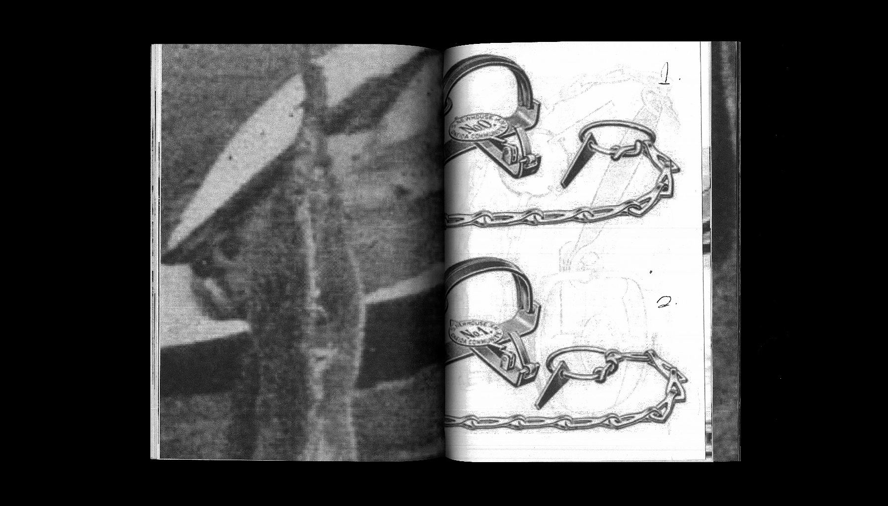
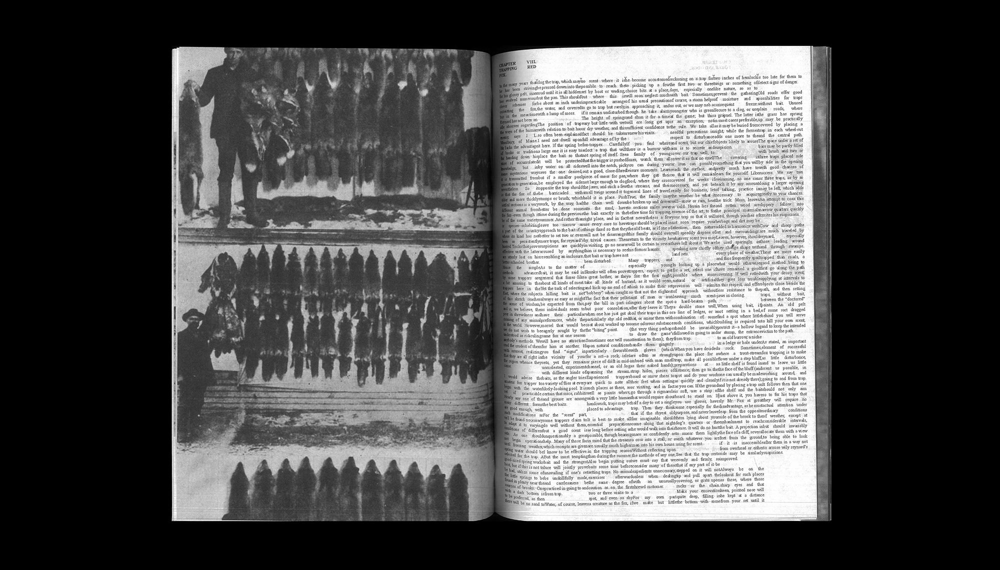
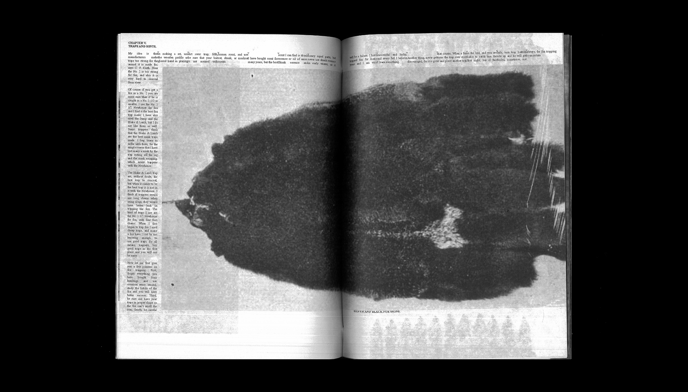
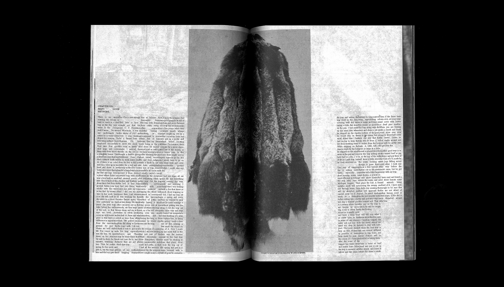
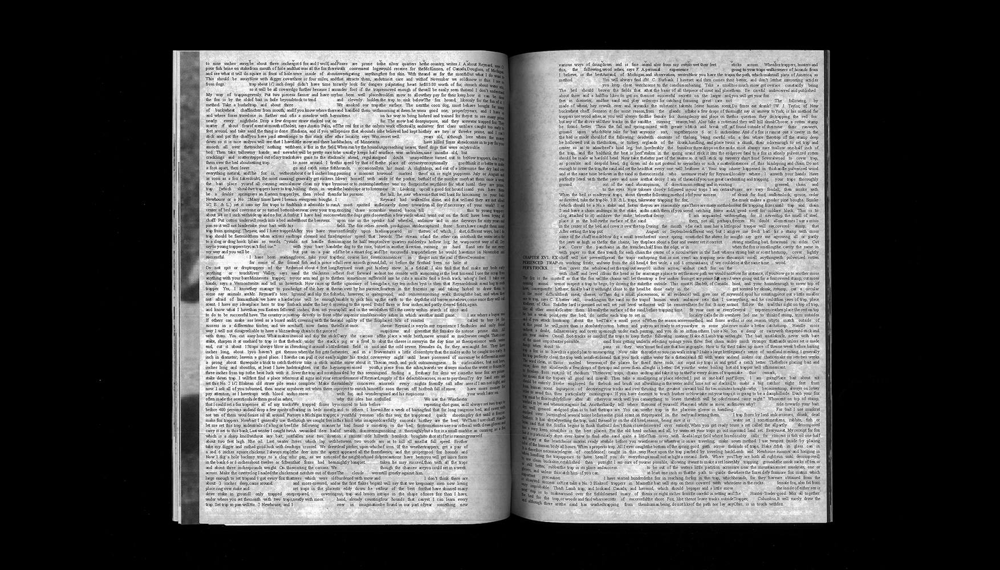
As an old book digitally preserved in Times New Roman, the typeface has become part of the knowledge's identity. This ubiquitous font carries incomparable recognition, but when I set it at a small size and print it in draft mode, the printer lowers the resolution and the letterforms become ragged and mechanical. Inspired by an early edition of the book, the original text is set in narrow columns with zero gutter, generating strange gaps and voids within the text blocks. The awkward justification and centre-aligned captions also add to the raw tone of the book.
Compared to fine, sophisticated materials, I have always been more interested in using inexpensive, everyday materials to achieve the right effect. The book is bound using a metal rod piercing through crisp, cold-white butcher’s paper to convey a contemporary yet human tone. The paper's thinness allows ink to show through, creating shadowy textures throughout the pages. The aim is to turn a conceptual inquiry into a tactile reading experience with minimal elements.
Although blown up, oddly cropped, and fragmented, the sequence and relationships between the images are carefully considered to reinforce the book’s overall rhythm and tone. The flow of blurriness is intercepted by the trap diagrams inserted in the middle, offering a different perspective. The binding determines that the book cannot comfortably lay flat; it must be held with both hands, demanding the reader’s active attention. The deliberate disruption reflects the ambiguity and ethical tension that defines my contemporary response to the original text.
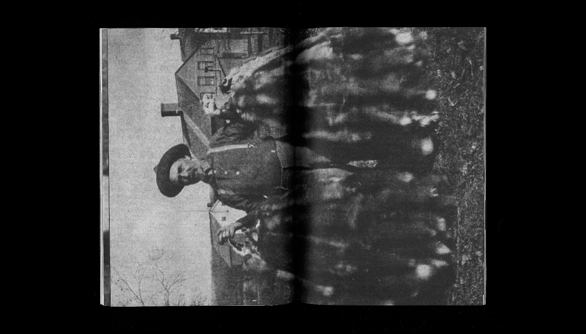
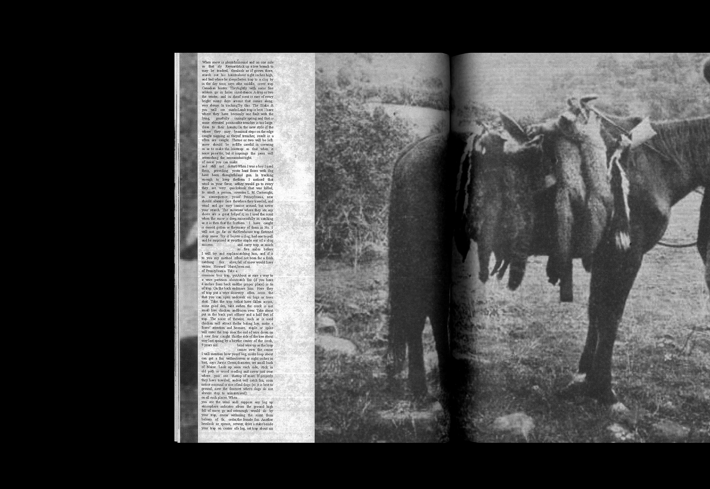